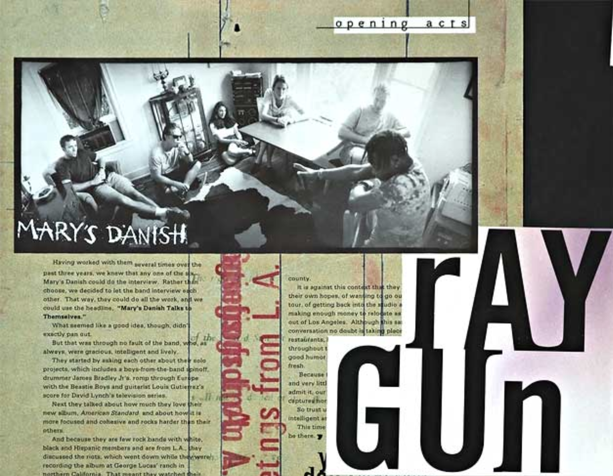
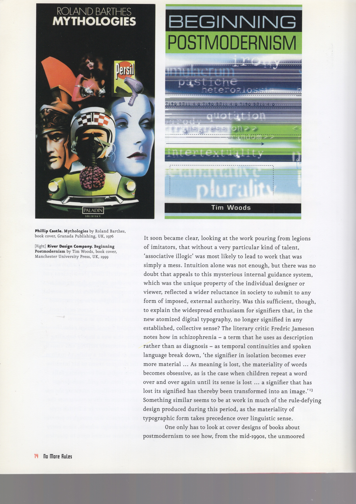
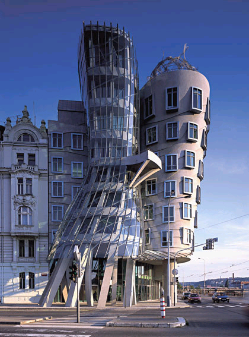

I was browsing episodes of the podcast 99% Invisible, which I’ve never listened to, and the title “The Smell of Concrete After Rain” caught my interest; the description said the episode was about architecture. I clicked play and then this thing happened, which kept happening last semester too: I kept experiencing these intersections of things I was studying. The host started talking about film titles, specifically the opening sequence for the 1964 James Bond film Goldfinger. Ian Fleming, author of the James Bond Books named the villain Goldfinger after a real person: architect Ernö Goldfinger who designed giant, Brualist style concrete buildings. Fleming hated them so much that he immortalized the architect’s name in a James Bond villain.
Concrete buildings like Goldfinger’s were not well liked. They held negative associations with Soviet-era Russia and were built at a time when energy was cheap and no one was concerned with having to heat or cool it; concrete was seen as the material that would change the world. Even today it’s the second most heavily consumed product in the world after water. Some of Goldfinger’s buildings were vacated because they were so despised by tenants, yet critics often praise his work. Despite its dull appearance, concrete as a material was humble, capable, and honest. It was used to build city halls, court houses, schools, churches, hospitals, and housing projects. I had just read a section in Rick Poynor’s book No More Rules that talked about the origins of the term “postmodern” being applied to architecture. “If the dynamiting of the modernist Pruitt-Igoe housing scheme in St. Louis Missouri on 15 July 1972 spelled the death of modern architecture, as Jencks liked to argue, then, in his view, Michael Graves’ controversial, competition-winning Portland building (1982), with its giant, decorative keystone, was postmodern architecture’s first major monument.” This is how I discovered Pruitt-Igoe.
The Pruitt-Igoe housing project was a series of 33 buildings designed by Japanese-Ameican architect Minoru Yamasaki that was supposed to be the most promising of its time—it was pitched as a solution to lift tenants out of poverty. It was commissioned by the government under the United States Housing Act of 1949, which gave cities funds for slum clearance and urban development based on the projection of a population increase that didn’t happen; instead, there was a primarily white, “middle class exodus” from the city to the suburbs in post war years.
The documentary film about the tragedy of Pruitt-Igoe features narration from a number of former tenants, but starts with Sylvester Brown who recalls returning to the property as an adult, after the buildings were torn down. Trees had grown where the buildings once stood, he recalled, and for a moment he felt at peace. But soon, a dog started to chase him and the fear of Pruitt-Igoe rushed back.
When tenants first started to occupy the buildings in 1954, conditions were good and the tenants were happy to live in a clean space. But, with maintenance fees tied to tenants’ rent, little money was set aside by the public sector for proper upkeep; living conditions worsened while segregation and crime rates increased. Demolition of the project began in 1972 and was completed by the mid-1970s.
This story struck me as so sad and my thoughts paralleled the narration in the film: were the modernist high rises that created a breeding ground for isolation, vandalism, and crime to blame for this public housing failure? The film doesn’t provide a clear yes or no answer. But, it’s hard for me to justify the design of a modernist building being the reason for Pruitt-Igoe’s downfall; a building doesn’t fail people; people fail people. The government and the city of St. Louis dropped the ball with building maintenance, but why did they not budget for that? Was it because the buildings that were built from the ground had the appearance and the intention of a prosperous future that the idea of the complex turning into a slum never crossed the minds of the planners? Did they just not care about the low-income population that would be living there, hoping to sweep them into one section of the city like rats? In a paper titled the same as the documentary, Katharine Bristol of the University of California, Berkeley, calls out the idea that Pruitt-Igoe failed because of an architectural failure—that is the myth. Pruitt-Igoe didn’t fail because the housing project consisted of modernist high rises; Pruit-Igoe failed because of systematic apathy and racism.
“When Charles Jencks announced in 1977 that the demolition of Pruitt-Igoe represented the death of modern architecture, he invoked an interpretation of the project that has today gained widespread acceptance. Anyone remotely familiar with the recent history of American architecture automatically associates Pruitt-Igoe with the failure of High Modernism, and with the inadequacy of efforts to provide livable environments for the poor. This version of the Pruitt-Igoe story is a myth. At the core of the myth is the idea that architectural design was responsible for the demise of Pruitt-Igoe,” Bristol writes.
In a way, creating these 33 buildings was segregating both the black and white low-income population from the rest of the city from the start, in a city that was already highly segregated: “Black (north) and white (south) slums of the old city were segregated and expanding, threatening to engulf the city center.” When tenants started moving in in 1954, buildings were segregated as were the rest of housing projects in Missouri, but there were both black and white tenants; it’s when conditions declined that the white tenants fled and the project became predominantly a black project. The film calls this “hypersegregated,” creating widespread prejudice against the project to the point where the police stopped responding to tenants’ calls. In this hypersegregated, unmaintained space, vandalism and violence increased among young boys. “To the average St. Louison, the world of Pruitt-Igoe became the representation of fears of black poverty, black drug abuse, and black crime. Pruitt-Igoe became synonymous with fear.”
The other thing I found shocking was that most of the tenants were young, single, black mothers, and this was because no able bodied men were allowed to live in Pruitt-Igoe while women and children received financial aid. Tenants on welfare were not allowed a telephone or television which created a “void of humanity;” they were treated like prisoners and blackmailed if they wanted to stay in their homes. The unstable familial environments forced on tenants by the welfare department undoubtedly created high-stress, isolating situations that contributed to the dire conditions at Pruitt-Igoe.
The injustice was infuriating and I felt stressed learning about this. It reminded me of Matthew Desmond’s book Evicted which I read a couple years ago and describes the housing system in Milwaukee, about 373 miles from St. Louis, where low-income families often skip public housing and live in market-rate housing. I remember feeling like I was going in circles reading Evicted because each of the families or people profiled in the book kept having to figure out their next move, or how they’re going to get an extra $300 for rent, and where they were going now that they’d been evicted and it felt endless. In Desmond’s book, he concluded that eviction is a cause of poverty, not just a symptom. In 2017, St. Louis Public Radio interviewed Desmond and he mentioned Pruitt-Igoe: “Many Americans still believe that the typical family in poverty lives in public housing or gets basic housing needs from the government,” Desmond said. “Only about one in four families that qualify for such services receive it. If you think of the typical poor family today, you shouldn’t think of them living in public housing towers like Pruitt-Igoe. You should think of them living in the private rental market, getting no government help, and giving most of their money to their landlord and utility company. There are services for folks who fall behind in rent, and help homelessness. But those services don’t stand up to the need.”
So while the modernist design of Pruitt-Igoe wasn’t to blame for its failure in the 1970s, and even though the physical buildings are gone, the image of them and their design continues to carry the remnants of prejudice and false ideas about public housing.
Poynor’s No More Rules has been pleasant to read. Right away he acknowledged that as a topic, postmodernism can be “difficult, slippery, and for some, infuriating,” and that felt satisfying, like we’re all in the confusion together. I find the writing engaging and I’m even seeing names and projects that I’ve come across already. For this text, I will cover the chapters Origins and Deconstruction here.
I found it helpful that Poynor listed associated postmodern characteristics: fragmentation, impurity of form, depthlessness, indeterminacy, intertextuality, pluralism, eclecticism, a return to the vernacular; originality ceases to be the goal, as in modernism; ironic recycling proliferates. Further clarifying this mystifying topic for me, Poynor writes that despite the “post” prefix attached to the term, postmodernism doesn’t necessarily come after modernism nor does it replace or reject modernism. Instead, he suggests postmodernism is a parasite, dependent on a modernist host. The central argument of the book, Poynor writes, is to identify Postmodernism as a significant development in graphic design: a period from the late 1980s to early 1990s when designers challenged ”the conventions or rules that were once widely regarded as constituting good practice.”
Poynor introduces an obvious argument about postmodernism that concerns rules and whether designers should be aware of them first, and then break them, or forget learning them all together. “Rules are good. Break them,” Tibor Kalman often said. Designer David Carson, who is known for his postmodern-looking work with Ray Gun Magazine (1992-1995), argues that it was his deliberate ignorance of rules that “allowed him to produce designs that seemed to many to resemble nothing ever encountered before in commercial print media.” In his book The End of Print (1995), Carson describes his way of working as “loose, intuitive, no-formal-training kind of approach,” and argues that the rationalism of grid systems and other kinds of typographic formatting is “horribly irrational” as a response to the complexity of the contemporary world.
I didn’t realize that T.S. Eliot is considered a modernist poet, but that’s what Poynor calls him and says that Eliot held the view that “It’s not wise to violate rules until you know how to observe them.” Similarly, British designer John Lewis wrote in his book Typography: Basic Principles (1963), “Before you start breaking rules, you should know what they are.” He also believed that when it comes to book design, the page is not a place for self expression.
I understand both sides of this debate and feel like I’ve occupied space in both of them; in arguing for ignorance of the rules, it makes sense that in terms of making things that don’t resemble anything else not knowing the rules beforehand would be beneficial. Yet, in my own practice, I feel much more comfortable having a foundation of graphic elements when making as opposed to the opposite. I also think David Carson may have been somewhat lucky to discover the anti-rules style because as Poynor points out, the imitators poured in, and it became clear that using “associative illogic” as a technique mostly led to “a mess.” I want to know how Poynor defines “a mess.” I feel like the definition of “a mess” may be evident in one of my song visualizations in the design section of this package, but at least I know it’s a mess. Nevertheless, Poynor concludes that “intuition alone was not enough.”
I think Dormer makes an interesting point, and it makes sense that we have rules for different activities because it’s a way for us to process the world and give it order, and order and control tend to give us comfort. But, my opinion lies closer to Kalman and Elliot’s, which is that it helps to know the rules of an activity, but leaving room for the rules to bend allows the designer the opportunity to discover something new. I think in this window of opportunity, there’s still potential to create something that we’ve never seen before.
Poynor’s chapter on Deconstruction, a term introduced by French philosopher Jacques Derrida in his book On Grammatology, was a bit more complicated for me; I always confuse it with Constructivism, Deconstructivism and other things that sound like it, yet deconstruction wasn’t a full blown movement like Constructivism. Poynor writes that “[D]econstruction remains a concept every bit as controversial as postmodernism and the relationship between the two is also open to question.” Yet, some of these next thoughts provide some clarity. Literary critic Jonathon Culler suggests that deconstruction seeks to dismantle or reinscribe the culturally constructed hierarchical oppositions that have traditionally structured Western thought: inside|outside, mind|body form|meaning.
On deconstructivism, literary critic Christopher Norris writes that this method aims to “undo both a given order of priorities and the very system of conceptual opposition that makes that order possible.” I’m not quite sure of the difference between the two here, deconstruction and deconstructivism; the differences seem extremely subtle. Are they meant to be the same? I think they are. Poynor starts a paragraph, “With the tendency termed ‘deconstructionist (and somethings, confusingly, ‘deconstructivist’) design…”
Poynor writes that deconstructivism picks up where the Russian Constructivists left off in the early 20th century with avant-garde artists like Tatlin and Rodchenko proposing radical and unstable geometric structures, but never imagining them as actual buildings. The deconstructionists in the late 1980s and early 1990s didn’t want to demolish a building’s structure, but sought to “disrupt, dislocate and deviate by incorporating a disturbance into the building’s internal structure.” I don’t really know what that means when I read it, but when I Google the works of deconstructivist architects I see some really funky buildings. One site I came across during this search says that “Removing the essence of architecture” was the summarized goal of Deconstructivism according to some critics.
I’m trying to get to the bottom of these distinctions, if there are any, but I feel my head going in circles. Maybe I’m getting confused because people in architecture and people in graphic design have used them to describe different things. But, I found Martha Witte and Chuck Byrne’s definition of deconstruction in design based the term’s origins in theory: “the word refers to the breaking down of something in order to decode its parts in such a way that these act as informers on the thing, or on any assumptions or convictions we have regarding it.”
In the closing paragraph of the Deconstruction chapter, Poynor makes a point about deconstruction creating a relationship between writer and reader. He shows spreads from Richard Eckersley’s The Telephone Book (1989) and writes that “The point of these typographic modulations is not that they offer the reader a set of competing visual amusements, or encouragements to read, or doubtful graphic mnemonics, but that they arise from the text, in a close cooperation between writer, designer and compositor, and serve textual meaning,” and this is something I find most significant about deconstruction: deconstruction design is often ambiguous and mysterious and creates the opportunity to develop connections between people who come in contact with the project, leaving the design open to individual meaning and interpretation.